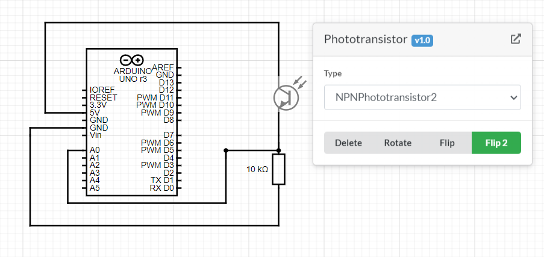

<br>
#### Week 7: Electronic Outputs
<html>
<div class="myDiv" style><h3>Electronic Outputs</h3></div>
<div class="vidDiv">
<div class="myDiv">
<h2>CAD: Joint</h2>
</div>
<div><video height="500" controls>
<source src="./IMG2_4433.mp4" type=video/mp4>
</video></div>
<div><video height="500" controls>
<source src="./LightRGBLED.mp4" type=video/mp4>
</video></div>

<div class="myDiv">
Using the Breadboard, Phototransistor, and a 10K Ohm resistor, A proximity sensor/light sensor could be made. The chosen output for the light sensor is the LCD and the RGB LED. Using a voltage divider between the phototransistor and 10K ohm resistor allowed for the transistor to work. Then, in the code, using the values from the phototransistor, the RGB LED, which was already wired by each cathode/anode going to a PWM pin or ground, was controlled and changed to different depending on light levels.
</div>
<div><video height="500" controls>
<source src="./IMG2_4411.mp4" type=video/mp4>
</video></div>
<div class="myDiv">
Oscilloscope:<br>
In this video, the buzzer oscillating every 1000 ms (or 1 second) was vibrating at a speed of 100 Hz as set by the code. The oscilloscope shows almost the exact same thing with 100.706 Hz. The buzzer was receiving 0.5 - 1 Volts and had waves where each wavelength was completed in 10 ms.
</div>
<div class="myDiv">
Coding
</div>
<div class = "leftmyDiv">
<pre><code>
#define NOTE_B0 31
#define NOTE_C1 33
#define NOTE_CS1 35
#define NOTE_D1 37
#define NOTE_DS1 39
#define NOTE_E1 41
#define NOTE_F1 44
#define NOTE_FS1 46
#define NOTE_G1 49
#define NOTE_GS1 52
#define NOTE_A1 55
#define NOTE_AS1 58
#define NOTE_B1 62
#define NOTE_C2 65
#define NOTE_CS2 69
#define NOTE_D2 73
#define NOTE_DS2 78
#define NOTE_E2 82
#define NOTE_F2 87
#define NOTE_FS2 93
#define NOTE_G2 98
#define NOTE_GS2 104
#define NOTE_A2 110
#define NOTE_AS2 117
#define NOTE_B2 123
#define NOTE_C3 131
#define NOTE_CS3 139
#define NOTE_D3 147
#define NOTE_DS3 156
#define NOTE_E3 165
#define NOTE_F3 175
#define NOTE_FS3 185
#define NOTE_G3 196
#define NOTE_GS3 208
#define NOTE_A3 220
#define NOTE_AS3 233
#define NOTE_B3 247
#define NOTE_C4 262
#define NOTE_CS4 277
#define NOTE_D4 294
#define NOTE_DS4 311
#define NOTE_E4 330
#define NOTE_F4 349
#define NOTE_FS4 370
#define NOTE_G4 392
#define NOTE_GS4 415
#define NOTE_A4 440
#define NOTE_AS4 466
#define NOTE_B4 494
#define NOTE_C5 523
#define NOTE_CS5 554
#define NOTE_D5 587
#define NOTE_DS5 622
#define NOTE_E5 659
#define NOTE_F5 698
#define NOTE_FS5 740
#define NOTE_G5 784
#define NOTE_GS5 831
#define NOTE_A5 880
#define NOTE_AS5 932
#define NOTE_B5 988
#define NOTE_C6 1047
#define NOTE_CS6 1109
#define NOTE_D6 1175
#define NOTE_DS6 1245
#define NOTE_E6 1319
#define NOTE_F6 1397
#define NOTE_FS6 1480
#define NOTE_G6 1568
#define NOTE_GS6 1661
#define NOTE_A6 1760
#define NOTE_AS6 1865
#define NOTE_B6 1976
#define NOTE_C7 2093
#define NOTE_CS7 2217
#define NOTE_D7 2349
#define NOTE_DS7 2489
#define NOTE_E7 2637
#define NOTE_F7 2794
#define NOTE_FS7 2960
#define NOTE_G7 3136
#define NOTE_GS7 3322
#define NOTE_A7 3520
#define NOTE_AS7 3729
#define NOTE_B7 3951
#define NOTE_C8 4186
#define NOTE_CS8 4435
#define NOTE_D8 4699
#define NOTE_DS8 4978
#define REST 0
//defining all the notes
// change this to make the song slower or faster
int tempo = 105;
// change this to whichever pin you want to use
int buzzer = 11;
// notes of the melody followed by the duration.
// a 4 means a quarter note, 8 an eighteenth , 16 sixteenth, so on
// !!negative numbers are used to represent dotted notes,
// so -4 means a dotted quarter note, that is, a quarter plus an eighteenth!!
int melody[] = {
// Pacman
// Score available at https://musescore.com/user/85429/scores/107109
NOTE_B4, 16, NOTE_B5, 16, NOTE_FS5, 16, NOTE_DS5, 16, //1
NOTE_B5, 32, NOTE_FS5, -16, NOTE_DS5, 8, NOTE_C5, 16,
NOTE_C6, 16, NOTE_G6, 16, NOTE_E6, 16, NOTE_C6, 32, NOTE_G6, -16, NOTE_E6, 8,
NOTE_B4, 16, NOTE_B5, 16, NOTE_FS5, 16, NOTE_DS5, 16, NOTE_B5, 32, //2
NOTE_FS5, -16, NOTE_DS5, 8, NOTE_DS5, 32, NOTE_E5, 32, NOTE_F5, 32,
NOTE_F5, 32, NOTE_FS5, 32, NOTE_G5, 32, NOTE_G5, 32, NOTE_GS5, 32, NOTE_A5, 16, NOTE_B5, 8
};
// sizeof gives the number of bytes, each int value is composed of two bytes (16 bits)
// there are two values per note (pitch and duration), so for each note there are four bytes
int notes = sizeof(melody) / sizeof(melody[0]) / 2;
// this calculates the duration of a whole note in ms
int wholenote = (60000 * 4) / tempo;
int divider = 0, noteDuration = 0;
unsigned long previousMillis = 0;
int buzzerState = HIGH;
#include <LiquidCrystal.h>
#define echoPin 7
#define trigPin 8
#include <LiquidCrystal_I2C.h>
LiquidCrystal_I2C lcd(0x27, 16, 2);
//including LiquidCrystal_I2C and LiquidCrystal libraries for the code, change '0x27' for your specific board (search up the set up)
long time; //Ultrasonic sensor values
long distance; // The final result in mm after calculating 'time'
long result; //variable for the result of the tx_rx measurement.
int analog_pin = A0;
int tx_pin = 10;
//LED
const int redPin = 5;
const int greenPin = 2;
const int bluePin = 3;
void color(int blue_num, int red_num, int green_num){
analogWrite(redPin, red_num);
analogWrite(bluePin, blue_num);
analogWrite(greenPin, green_num);
} // defining the rgb colors
void setup() {
Serial.begin(9600);
pinMode(echoPin, INPUT);
pinMode(trigPin, OUTPUT);
lcd.init();
lcd.clear();
lcd.backlight();
lcd.setCursor(4,0);
lcd.print("Welcome");
//setting up LCD
// iterate over the notes of the melody.
// Remember, the array is twice the number of notes (notes + durations)
for (int thisNote = 0; thisNote < notes * 2; thisNote = thisNote + 2) {
// calculates the duration of each note
divider = melody[thisNote + 1];
if (divider > 0) {
// regular note, just proceed
noteDuration = (wholenote) / divider;
} else if (divider < 0) {
// dotted notes are represented with negative durations!!
noteDuration = (wholenote) / abs(divider);
noteDuration *= 1.5; // increases the duration in half for dotted notes
}
// we only play the note for 90% of the duration, leaving 10% as a pause
tone(buzzer, melody[thisNote], noteDuration * 0.9);
// Wait for the specief duration before playing the next note.
delay(noteDuration);
// stop the waveform generation before the next note.
noTone(buzzer);
}
//Capacitor
pinMode(tx_pin, OUTPUT); //Pin 10 provides the voltage step
};
void loop() {
lcd.clear(); // needed for LCD to function (clears the screen before writing on it again)
digitalWrite(trigPin, LOW);
delay(2);
digitalWrite (trigPin, HIGH);
delay(10);
digitalWrite (trigPin, LOW);
time = pulseIn(echoPin, HIGH);
distance = time/5.75; // distance in mm
//all the steps needed for the ultrasonic sensor to work (pulses and senses the ultrasonic waves)
previousMillis = 0; //for later to avoid delay function
lcd.print(distance);
lcd.print(" mm"); //distance in mm
if (distance > 10000){
lcd.clear();
lcd.print ("er404");
}else{
}
// error in calculating distance (Object too close)
result = tx_rx();
int real = map(result, 10200, 11450, 0, 101); // capacitor values mapped to kgs using soap that is 100g and more items
lcd.setCursor(6, 0);
lcd.print (real);
lcd.print(" g");
Serial.println(result);
//displays weight
lcd.setCursor(0, 1);
float RRRR = analogRead(A5);
float level = 1028-RRRR;
lcd.print("light: ");
lcd.print(level);
//displays light levels
if (level<=100){
//Serial.println("Level between 50 and 150 ");
tone(buzzer,1000);
color(0,0,0);
} else if ((level>100)&&(level<=200)){
color(255,0,255);
tone(buzzer,500);
} else if ((level>200)&&(level<=250)){
color(255,0,0);
noTone(buzzer);
} else if ((level>250)){
color(0, 0, 255);
noTone(buzzer);
} // coding for RGB LED
delay(200); //needed for the whole function to work and to give Arduino UNO a break
if (distance>10000){
unsigned long currentMillis = millis();
if ((buzzerState == HIGH) && (currentMillis - previousMillis >= 1000)) {
buzzerState = LOW;
previousMillis = currentMillis;
tone(buzzer, 100);
} else if ((buzzerState == LOW) && (currentMillis - previousMillis > 1000)) {
buzzerState = HIGH;
previousMillis = currentMillis;
noTone(buzzer);
} //beeping error sound
}
}
long tx_rx(){ // Function to execute rx_tx algorithm and return a value
// that depends on coupling of two electrodes.
// Value returned is a long integer.
int read_high;
int read_low;
int diff;
long int sum;
int N_samples = 100; // Number of samples to take. Larger number slows it down, but reduces scatter.
sum = 0;
for (int i = 0; i < N_samples; i++){
digitalWrite(tx_pin,HIGH); // Step the voltage high on conductor 1.
read_high = analogRead(analog_pin); // Measure response of conductor 2.
delayMicroseconds(100); // Delay to reach steady state.
digitalWrite(tx_pin,LOW); // Step the voltage to zero on conductor 1.
read_low = analogRead(analog_pin); // Measure response of conductor 2.
diff = read_high - read_low; // desired answer is the difference between high and low.
sum += diff; // Sums up N_samples of these measurements.
}
return sum; //averaging values for stability of capacitor
}
</code></pre>
</div> <br>
<div class="myDiv">
<h2> This is how the whole thing works!</h2>
</div>
<div><video height="500" controls>
<source src="./IMG2_4526.mp4" type=video/mp4>
</video></div>
</div><br>
<div class="vidDiv">
<div class="myDiv">
<h2>What did I learn?</h2><br>
<h5> I learned how to code efficiently without delay as well as how to assemble bigger projects in a timely manner. The coding and wiring skills learned will be useful for the final project.</h5><br>
</div>
<br>
<div class="myDiv">
<h2>What can I do better next time?</h2><br>
<h5>Next time, I should make the code more efficiently because the current code is extremely long. </h5><br>
</div>
</div>